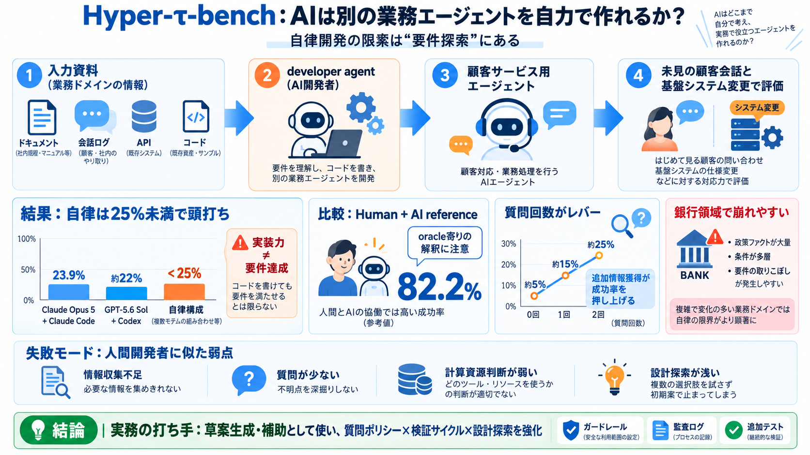

Claude Opus 5 vs GPT-5.6 Sol: Head-to-Head Benchmark & Safety Breakdown (2026)
reported opus 5 ranks number one at 61 above fable 5 above GPT5.6 soul on the Agentic index also number one at 55.3 on F…

reported opus 5 ranks number one at 61 above fable 5 above GPT5.6 soul on the Agentic index also number one at 55.3 on F…
Sitemap Open in app Sign up Sign in _Last verified: August 30, 2026. Benchmark scores change fast in this space, r…
| Category | Claude Opus 5 | GPT-5.6 Sol | Edge | --- --- | | Real-world bug fixes | 79.2% SWE-bench Pro | 64.6% SWE-b…
GPT-5.6 Sol (high) is faster. GPT-5.6 Sol (high) generates 70.4 tokens per second, compared with Claude Opus 4.8 (Adapti…
MMMU-Pro Claude Opus 5— GPT-5.6 Sol 83% Source Not directly comparable MMMU-Pro w/ Python Claude Opus 5— GPT-5.6 …